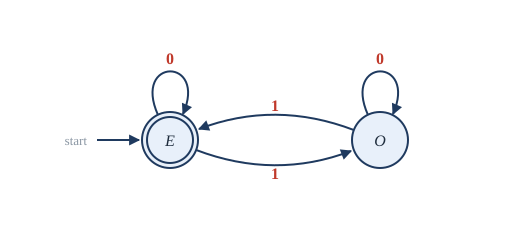
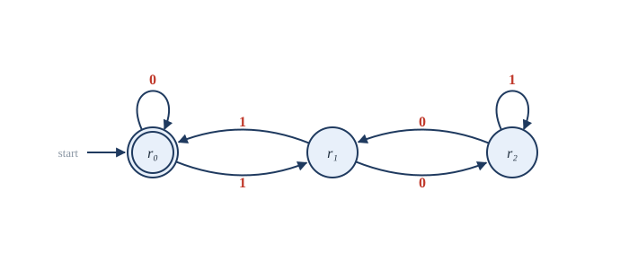
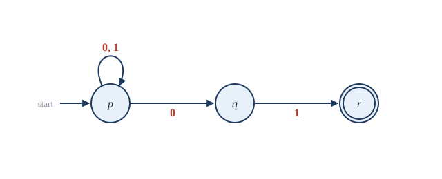
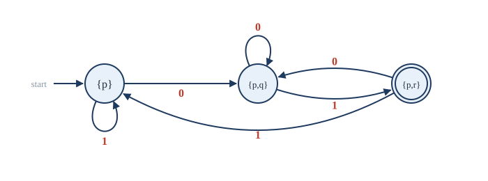

Chapter 14: Automata and Languages¶
Finite machines, regular expressions and the limits of computation
Learning outcomes
After this chapter you should be able to:
- work with alphabets, strings and languages, and the operations of concatenation, union and Kleene star;
- describe finite-state machines with output, and deterministic finite automata by state diagrams and transition tables;
- design a DFA that recognises a given language, and determine the language recognised by a given DFA;
- explain nondeterministic finite automata and convert one to an equivalent DFA by the subset construction;
- write and read regular expressions, and state Kleene's theorem;
- prove with the pigeonhole principle that some languages are not regular, and describe in outline the hierarchy of grammars, Turing machines and the halting problem.
14.1 Strings and languages¶
A finite automaton is the simplest mathematical model of a computer: a machine with a fixed, finite memory that reads its input one symbol at a time. Such machines describe vending machines, traffic lights, network protocols, the lexical analysers of compilers that split a program into words, and the search functions of text editors. They also mark the first step on a ladder of models that leads to the question of what can be computed at all.
Recall from Section 6.4 that an alphabet \(\Sigma\) is a finite non-empty set of symbols and a string (or word) over \(\Sigma\) is a finite sequence of symbols. The empty string is written \(\lambda\), the length of \(w\) is \(\lvert w \rvert\), and \(\Sigma^{*}\) is the set of all strings over \(\Sigma\), including \(\lambda\).
Definition: language
A language over \(\Sigma\) is any subset of \(\Sigma^{*}\).
Over \(\Sigma = \{0, 1\}\), examples are \(\{0, 01, 011\}\) (finite), the set of strings with an even number of 1s (infinite), the set of binary numerals of the primes, \(\varnothing\), and \(\{\lambda\}\) (which is not empty: it contains one string).
Languages are sets, so they can be combined by union and intersection. Two further operations come from strings.
- The concatenation of \(A\) and \(B\) is \(AB = \{xy : x \in A,\, y \in B\}\). For \(A = \{0, 11\}\) and \(B = \{1, 10\}\), \(AB = \{01, 010, 111, 1110\}\).
- The powers are \(A^0 = \{\lambda\}\) and \(A^{n+1} = A^n A\), so \(A^n\) is the set of concatenations of \(n\) strings from \(A\).
- The Kleene star (or closure) of \(A\) is \(A^{*} = A^0 \cup A^1 \cup A^2 \cup \dots\), the set of all concatenations of any number (including zero) of strings from \(A\).
So \(\{0\}^{*} = \{\lambda, 0, 00, 000, \dots\}\) and \(\{0, 1\}^{*}\) is all bit strings, which is why \(\Sigma^{*}\) is written with a star.
14.2 Finite-state machines with output¶
A finite-state machine with output has a finite set of states, a start state, an input alphabet and an output alphabet. In each step it reads one input symbol and, depending on its current state and that symbol, moves to a next state and produces one output symbol. (A machine whose output depends on the state and the input, like this one, is called a Mealy machine.)
Example 14.1: Detecting two 1s in a row
Problem. Design a machine that reads a bit string and outputs 1 at each position where the current bit and the previous bit are both 1, and 0 otherwise.
Solution. The machine needs to remember only whether the previous bit was 1. Use two states: \(s_0\) ("previous bit was 0, or no bit yet", the start state) and \(s_1\) ("previous bit was 1").
| State | Input 0: next, output | Input 1: next, output |
|---|---|---|
| \(s_0\) | \(s_0\), 0 | \(s_1\), 0 |
| \(s_1\) | \(s_0\), 0 | \(s_1\), 1 |
On input \(0111011\) the states visited are \(s_0, s_0, s_1, s_1, s_1, s_0, s_1, s_1\), and the output is \(0011001\).
The essential idea is that the state is the machine's only memory, and a finite set of states can remember only a bounded amount about the past. Designing a machine means deciding what it must remember.
14.3 Deterministic finite automata¶
When the only output we care about is a final verdict, accept or reject, we get the central model of this chapter.
Definition: deterministic finite automaton
A deterministic finite automaton (DFA) \(M = (Q, \Sigma, \delta, q_0, F)\) consists of
- a finite set \(Q\) of states;
- an input alphabet \(\Sigma\);
- a transition function \(\delta : Q \times \Sigma \to Q\);
- a start state \(q_0 \in Q\);
- a set \(F \subseteq Q\) of accepting (or final) states.
\(M\) reads a string \(w = a_1 a_2 \cdots a_n\) by starting in \(q_0\) and moving to \(q_1 = \delta(q_0, a_1)\), then \(q_2 = \delta(q_1, a_2)\), and so on. It accepts \(w\) if the last state \(q_n\) is in \(F\), and rejects it otherwise. The language recognised by \(M\) is \(L(M) = \{w \in \Sigma^{*} : M \text{ accepts } w\}\).
"Deterministic" means that from each state, each input symbol leads to exactly one next state: \(\delta\) is a function. A DFA is drawn as a state diagram: a circle for each state, an arrow labelled \(a\) from \(q\) to \(\delta(q, a)\), an unlabelled arrow into the start state, and a double circle for each accepting state.
Example 14.2: An even number of 1s
Problem. Design a DFA over \(\{0, 1\}\) that accepts exactly the strings containing an even number of 1s.
Solution. The machine must remember the parity of the number of 1s seen so far: two states, \(E\) (even, the start state, accepting) and \(O\) (odd). A 0 leaves the parity unchanged; a 1 flips it. Figure 14.1 shows the diagram. On \(1011\) the states are \(E, O, O, E, O\): the string is rejected (it has three 1s). On \(0110\) they are \(E, E, O, E, E\): accepted.

Example 14.3: Binary numbers divisible by 3
Problem. Design a DFA that reads a binary numeral, most significant bit first, and accepts it when the number is divisible by 3.
Solution. Remember the remainder modulo 3 of the number read so far. If the prefix read so far has value \(v\), reading one more bit \(b\) makes the value \(2v + b\), so the remainder \(r\) becomes \((2r + b) \bmod 3\). With states \(r_0, r_1, r_2\) for the remainders:
| State | Input 0 | Input 1 |
|---|---|---|
| \(\to r_0\) (accepting) | \(r_0\) | \(r_1\) |
| \(r_1\) | \(r_2\) | \(r_0\) |
| \(r_2\) | \(r_1\) | \(r_2\) |
The start state is \(r_0\) (the empty prefix has value 0), and \(r_0\) is the only accepting state. Reading \(1001\) (nine): \(r_0 \xrightarrow{1} r_1 \xrightarrow{0} r_2 \xrightarrow{0} r_1 \xrightarrow{1} r_0\), accepted. Figure 14.2 shows the diagram.

A DFA is easy to simulate: keep the current state and look up each transition in a table.
def accepts(delta, start, accepting, word):
state = start
for symbol in word:
state = delta[(state, symbol)]
return state in accepting
# remainder of a binary number modulo 3
delta = {("r0", "0"): "r0", ("r0", "1"): "r1",
("r1", "0"): "r2", ("r1", "1"): "r0",
("r2", "0"): "r1", ("r2", "1"): "r2"}
for n in range(13):
w = format(n, "b")
print(n, w, accepts(delta, "r0", {"r0"}, w))
The program accepts exactly 0, 3, 6, 9 and 12 among the numbers it tries. Notice that it runs in one pass, with constant memory, however long the input is: that is the defining feature of finite automata.
Designing a DFA¶
How to design a DFA
Ask: what must the machine remember about the input read so far in order to decide the rest? Make one state for each possible thing to remember. Then fill in the transitions, choose the start state (what is remembered about \(\lambda\)), and mark the accepting states.
Example 14.4: Strings ending in 01
Problem. Design a DFA over \(\{0, 1\}\) accepting the strings that end in \(01\).
Solution. The machine must remember how much of the pattern \(01\) the input currently ends with: nothing useful (\(A\)), a \(0\) (\(B\)), or \(01\) (\(C\), accepting). From \(A\): reading 0 gives \(B\), reading 1 stays in \(A\). From \(B\): 0 stays in \(B\) (the input still ends in a 0), 1 gives \(C\). From \(C\): 0 gives \(B\), 1 gives \(A\) (the input ends in \(11\)). This is the DFA of Figure 14.4 below, with its states renamed.
Two constructions show that the languages recognised by DFAs are closed under the set operations. If \(M\) recognises \(L\), swapping accepting and non-accepting states gives a DFA for the complement \(\Sigma^{*} - L\). If \(M_1\) and \(M_2\) recognise \(L_1\) and \(L_2\), the product automaton, whose states are pairs \((p, q)\) of a state of each and which runs both machines side by side, recognises \(L_1 \cap L_2\) (accept when both components accept) or \(L_1 \cup L_2\) (accept when either does).
14.4 Nondeterministic finite automata¶
A nondeterministic automaton is allowed to have a choice of moves, or none.
Definition: nondeterministic finite automaton
A nondeterministic finite automaton (NFA) is like a DFA except that the transition function gives a set of next states: \(\delta : Q \times \Sigma \to \mathcal{P}(Q)\). An NFA accepts \(w\) if there is at least one way of choosing moves while reading \(w\) that ends in an accepting state.
One can picture an NFA as guessing correctly, or as exploring all choices at once. NFAs are often much easier to design.
Example 14.5: An NFA for strings ending in 01
Problem. Give an NFA for the strings over \(\{0, 1\}\) that end in \(01\).
Solution. Stay in a start state \(p\) on any symbol, and at some point "guess" that the final \(01\) is beginning: from \(p\), a 0 may also lead to \(q\); from \(q\), a 1 leads to the accepting state \(r\); \(r\) has no moves (Figure 14.3). A string is accepted exactly when some choice reaches \(r\) at the end, which happens exactly when the string ends in \(01\).

Nondeterminism seems to add power, but for finite automata it does not.
Theorem 14.1 (the subset construction)
For every NFA there is a DFA that recognises the same language.
Proof. Let the NFA be \(N = (Q, \Sigma, \delta, q_0, F)\). Build a DFA \(D\) whose states are the sets of states of \(N\): the state of \(D\) after reading \(w\) is the set of all states \(N\) could be in after reading \(w\). Formally, \(D\) has state set \(\mathcal{P}(Q)\), start state \(\{q_0\}\), and transition function
and a set \(S\) is accepting in \(D\) if it contains at least one accepting state of \(N\). By induction on the length of \(w\), the state of \(D\) after reading \(w\) is exactly the set of states reachable in \(N\) by reading \(w\); so \(D\) accepts \(w\) if and only if some run of \(N\) ends in an accepting state, that is, if and only if \(N\) accepts \(w\). \(\blacksquare\)
In practice only the sets reachable from \(\{q_0\}\) are constructed.
Example 14.6: Converting an NFA
Problem. Apply the subset construction to the NFA of Figure 14.3.
Solution. Start from \(\{p\}\) and compute the transitions of each new set as it appears.
| DFA state | On 0 | On 1 |
|---|---|---|
| \(\to \{p\}\) | \(\{p, q\}\) | \(\{p\}\) |
| \(\{p, q\}\) | \(\{p, q\}\) | \(\{p, r\}\) |
| \(\{p, r\}\) (accepting) | \(\{p, q\}\) | \(\{p\}\) |
Only three of the eight subsets are reachable. The result (Figure 14.4) is the DFA of Example 14.4, with \(A = \{p\}\), \(B = \{p, q\}\), \(C = \{p, r\}\).

The price of determinism
The subset construction can produce up to \(2^{\lvert Q \rvert}\) states, and for some languages that many really are needed. The language of strings whose \(n\)-th symbol from the end is 1 has an NFA with \(n + 1\) states, but every DFA for it has at least \(2^n\) states. Nondeterminism does not recognise more languages, but it can describe them far more compactly.
14.5 Regular expressions¶
Regular expressions describe languages by formulas.
Definition: regular expression
The regular expressions over \(\Sigma\), and the languages they denote, are defined recursively:
- \(\varnothing\) denotes the empty language; \(\lambda\) denotes \(\{\lambda\}\); each symbol \(a \in \Sigma\) denotes \(\{a\}\);
- if \(R\) and \(S\) are regular expressions, then \((R \cup S)\) denotes the union, \((RS)\) the concatenation, and \(R^{*}\) the Kleene star of the languages they denote.
A language is regular if some regular expression denotes it.
The star binds most tightly, then concatenation, then union, so \(0 \cup 10^{*}\) means \(0 \cup (1(0^{*}))\). Some examples over \(\{0, 1\}\):
| Regular expression | Language |
|---|---|
| \((0 \cup 1)^{*}\) | all bit strings |
| \((0 \cup 1)^{*}01\) | strings ending in \(01\) |
| \(0^{*}10^{*}\) | strings with exactly one 1 |
| \((0 \cup 1)^{*}1(0 \cup 1)^{*}\) | strings with at least one 1 |
| \((00)^{*}\) | strings of 0s of even length |
| \(0^{*}(10^{*}10^{*})^{*}\) | strings with an even number of 1s |
| \((1 \cup 01)^{*}(\lambda \cup 0)\) | strings with no two consecutive 0s |
Table 14.1. Regular expressions and the languages they denote.
Theorem 14.2 (Kleene's theorem)
A language is regular (denoted by a regular expression) if and only if it is recognised by some finite automaton.
Idea of the proof. From expressions to automata: by structural induction on the expression. There are NFAs for \(\varnothing\), \(\lambda\) and single symbols, and NFAs for \(R\) and \(S\) can be combined into NFAs for \(R \cup S\) (choose one machine at the start), \(RS\) (run one, then the other) and \(R^{*}\) (loop back from the accepting states to the start); by Theorem 14.1 these can be made deterministic. From automata to expressions: states are removed one at a time, labelling the arrows with regular expressions for the paths that went through the removed state, until only an expression from the start to the accepting states remains. The details are in the books on the theory of computation listed in Further reading. \(\blacksquare\)
Regular expressions are used every day: text editors, command-line tools and programming languages use them (with extra conveniences such as [0-9] for any digit and + for "one or more") to search and validate text. A pattern is compiled into an automaton, which then scans the text in one pass.
import re
even_ones = re.compile(r"0*(10*10*)*")
for w in ["0", "1", "10", "11", "0110", "101", "1001"]:
print(w, bool(even_ones.fullmatch(w)))
This prints True for 0, 11, 0110, 101 and 1001, and False for 1 and 10.
14.6 The limits of finite automata¶
A finite automaton has finite memory, so it cannot count without bound. That intuition can be made into a proof, using the pigeonhole principle.
Theorem 14.3
The language \(L = \{0^n 1^n : n \ge 0\} = \{\lambda, 01, 0011, 000111, \dots\}\) is not regular.
Proof. Suppose, for a contradiction, that a DFA \(M\) with \(k\) states recognises \(L\). Consider the \(k + 1\) strings \(\lambda, 0, 0^2, \dots, 0^k\), and the state \(M\) is in after reading each. There are only \(k\) states, so by the pigeonhole principle two of these strings, say \(0^i\) and \(0^j\) with \(i < j\), leave \(M\) in the same state. From that state, reading \(1^i\) leads to the same final state in both cases. But \(0^i 1^i \in L\) must be accepted and \(0^j 1^i \notin L\) must be rejected, and the same final state cannot do both. So no DFA recognises \(L\). \(\blacksquare\)
The same argument shows that the language of balanced parentheses (Section 6.4) is not regular: no finite automaton can check that the brackets of an arbitrarily nested expression match. The general tool built on this idea is called the pumping lemma.
Grammars and the hierarchy of languages¶
A grammar generates a language by rewriting rules. For example, the rules \(S \to 0S1\) and \(S \to \lambda\) generate exactly \(\{0^n 1^n\}\): \(S \Rightarrow 0S1 \Rightarrow 00S11 \Rightarrow 0011\). Grammars in which every rule rewrites a single symbol, like these, are context-free; they describe the syntax of programming languages, and are recognised by automata with a stack, called pushdown automata. Noam Chomsky classified grammars into a hierarchy:
| Grammar | Languages | Recognised by |
|---|---|---|
| regular | regular | finite automata |
| context-free | context-free | pushdown automata (with a stack) |
| context-sensitive | context-sensitive | linear-bounded automata |
| unrestricted | recursively enumerable | Turing machines |
Table 14.2. The Chomsky hierarchy. Each class contains the ones above it.
Turing machines and the halting problem¶
At the top of the hierarchy is the Turing machine, introduced by Alan Turing in 1936: a finite control like that of a DFA, together with an unbounded tape that it can read, write and move along in both directions. Every algorithm that has ever been written can be carried out by a Turing machine, and the Church-Turing thesis proposes that Turing machines capture exactly what is computable by any mechanical procedure.
Yet some problems cannot be solved by any Turing machine, or any program.
Theorem 14.4 (the halting problem is undecidable)
There is no program \(H\) that, given any program \(P\) and input \(x\), correctly decides whether \(P\) eventually halts when run on \(x\).
Proof sketch. Suppose such an \(H\) existed. Build a program \(D\) that, given a program \(P\), runs \(H\) on \((P, P)\) and then does the opposite: if \(H\) says "\(P\) halts on input \(P\)", then \(D\) loops for ever; if \(H\) says "\(P\) does not halt on \(P\)", then \(D\) halts. Now run \(D\) on itself. If \(D\) halts on \(D\), then by its construction \(H\) said it does not, so \(H\) was wrong. If \(D\) does not halt on \(D\), then \(H\) said it halts, and again \(H\) was wrong. Either way \(H\) fails on the input \((D, D)\), a contradiction. \(\blacksquare\)
This is Cantor's diagonal argument (Theorem 4.4) in another form: \(D\) is built to differ from every program on the diagonal. It shows that there are precise, natural questions about programs that no program can answer, and it is the starting point of the theory of computability.
14.7 Summary¶
Summary
- A language is a set of strings over an alphabet. Languages combine by union, concatenation and Kleene star.
- A finite-state machine has finitely many states, which are its only memory. A DFA \((Q, \Sigma, \delta, q_0, F)\) accepts a string when reading it ends in an accepting state. Design a DFA by asking what it must remember.
- An NFA may have several moves or none; it accepts if some run accepts. The subset construction turns an NFA into an equivalent DFA, possibly with exponentially more states.
- Regular expressions are built from symbols with \(\cup\), concatenation and \(^{*}\). Kleene's theorem: regular expressions and finite automata describe the same languages, the regular languages.
- \(\{0^n1^n\}\) is not regular, by the pigeonhole principle. Context-free grammars and pushdown automata go further; Turing machines capture general computation.
- The halting problem is undecidable, by a diagonal argument.
14.8 Exercises¶
Exercise 1
Let \(A = \{\lambda, 1\}\) and \(B = \{0, 10\}\). List \(AB\), \(BA\) and the strings of length at most 3 in \(B^{*}\).
Answer
\(AB = \{0, 10, 110\}\) (from \(\lambda0, \lambda10, 10, 110\), with \(10\) appearing twice). \(BA = \{0, 01, 10, 101\}\). Strings of \(B^{*}\) of length at most 3: \(\lambda, 0, 00, 10, 000, 010, 100\).
Exercise 2
Design a DFA over \(\{0, 1\}\) that accepts the strings containing the substring \(11\).
Answer
States: \(A\) (no progress, start), \(B\) (last symbol was 1), \(C\) (\(11\) has been seen, accepting). \(A\): 0 to \(A\), 1 to \(B\). \(B\): 0 to \(A\), 1 to \(C\). \(C\): 0 and 1 to \(C\) (once seen, always accepted).
Exercise 3
Which strings does the DFA with states \(q_0\) (start, accepting) and \(q_1\), and transitions \(q_0 \xrightarrow{a} q_1\), \(q_1 \xrightarrow{a} q_0\), \(q_0 \xrightarrow{b} q_0\), \(q_1 \xrightarrow{b} q_1\), accept?
Answer
The \(a\)'s flip the state and the \(b\)'s leave it alone, so it accepts exactly the strings over \(\{a, b\}\) with an even number of \(a\)'s.
Exercise 4
Design a DFA for binary strings whose length is divisible by 3.
Answer
Three states \(L_0\) (start, accepting), \(L_1\), \(L_2\), recording the length modulo 3; every symbol moves \(L_i\) to \(L_{(i+1) \bmod 3}\).
Exercise 5
Use the subset construction on the NFA with states \(p\) (start) and \(q\) (accepting), and transitions \(\delta(p, 0) = \{p, q\}\), \(\delta(p, 1) = \{p\}\), \(\delta(q, 0) = \varnothing\), \(\delta(q, 1) = \{q\}\). What language does it recognise?
Answer
\(\{p\}\): on 0 to \(\{p, q\}\), on 1 to \(\{p\}\). \(\{p, q\}\): on 0 to \(\{p, q\}\), on 1 to \(\{p, q\}\). Accepting: \(\{p, q\}\). The DFA accepts once a 0 has been read: the language is the strings containing at least one 0, \((0 \cup 1)^{*}0(0 \cup 1)^{*}\).
Exercise 6
Write regular expressions for: (a) strings over \(\{a, b\}\) that begin with \(a\) and end with \(b\); (b) bit strings with at most one 0; (c) bit strings of odd length.
Answer
(a) \(a(a \cup b)^{*}b\). (b) \(1^{*}(\lambda \cup 0)1^{*}\). (c) \((0 \cup 1)((0 \cup 1)(0 \cup 1))^{*}\).
Exercise 7
Describe in words the language of \((0 \cup 1)^{*}00(0 \cup 1)^{*}\) and the language of \((1 \cup 01)^{*}\).
Answer
The first: strings containing \(00\). The second: strings in which every 0 is immediately followed by a 1; equivalently, strings with no two consecutive 0s that do not end in 0.
Exercise 8
Prove that \(\{0^n 1^{2n} : n \ge 0\}\) is not regular.
Answer
If a DFA with \(k\) states recognised it, then among \(0^0, 0^1, \dots, 0^k\) two strings \(0^i\) and \(0^j\) (\(i < j\)) would lead to the same state. Then \(0^i1^{2i}\) and \(0^j1^{2i}\) would end in the same state, but the first is in the language and the second is not. Contradiction. \(\blacksquare\)
Exercise 9
Give a context-free grammar for the balanced strings of parentheses of Section 6.4.
Answer
\(S \to (S)\), \(S \to SS\), \(S \to \lambda\). These mirror the recursive definition: \(\lambda\) is balanced, and if \(u\) and \(v\) are balanced so are \((u)\) and \(uv\).
14.9 Quiz¶
Check your understanding of automata
Exercise 1
In a DFA, from each state each input symbol leads to
- exactly one state
- at least one state
- at most one state
- any number of states
Answer
exactly one state
Exercise 2
A DFA accepting binary strings with an even number of 1s needs at least how many states?
Answer
2
Exercise 3
The subset construction shows that
- every NFA has an equivalent DFA
- every language is regular
- DFAs need a stack
- NFAs recognise more languages than DFAs
Answer
every NFA has an equivalent DFA
Exercise 4
Which string is in the language of (0 ∪ 1)*01?
- 0110
- 1101
- 0100
- 10
Answer
1101
Exercise 5
Which language is not regular?
- strings with an even number of 1s
- strings ending in 01
- 0^n 1^n for n ≥ 0
- all bit strings
Answer
0^n 1^n for n ≥ 0
Exercise 6
Kleene's theorem says that regular expressions describe exactly the languages recognised by
- finite automata
- pushdown automata
- Turing machines
- Boolean circuits
Answer
finite automata
Exercise 7
The undecidability of the halting problem is proved by
- a diagonal argument
- induction
- the pigeonhole principle
- inclusion-exclusion
Answer
a diagonal argument